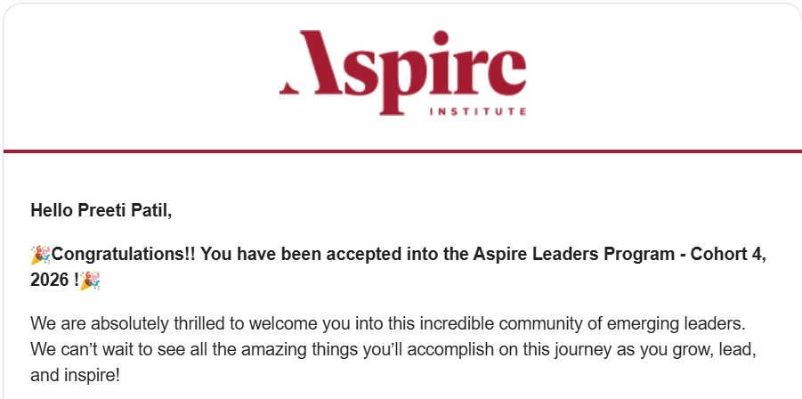
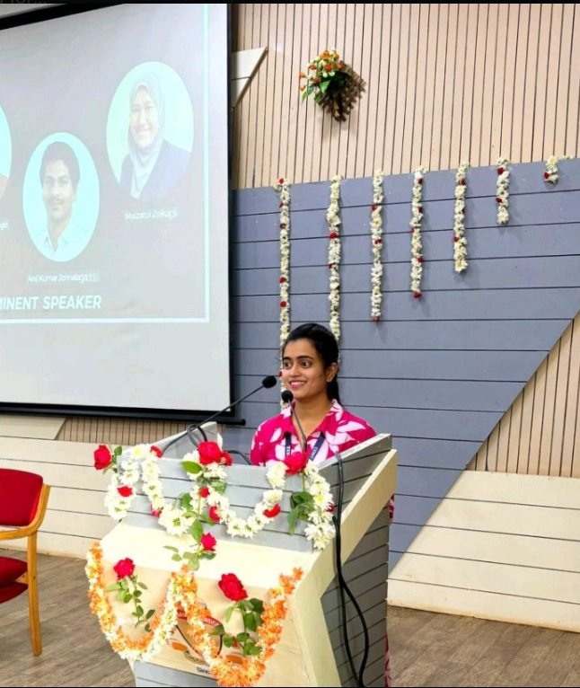

1. Aspire Leaders Program — Cohort 4 (Oct 2026 – Present)
Role: Global Delegate | Organization: Aspire Institute (Founded by Harvard Business School Faculty)
Selectivity: Selected from 100,000+ global applicants across 195 countries for a competitive leadership and strategic problem-solving cohort.

Ongoing Capstone: Rural & Semi-Urban Career Mentorship Proposal (Problem Discovery Phase)
- Problem Identified: Students in rural and semi-urban regions often lack structured career visibility, industry mentorship, and guidance on emerging technology pathways compared to metro-city peers.
- Root-Cause Analysis: Mapped key barriers—information asymmetry, lack of accessible local role models, and fragmented guidance resources—into a structured concept proposal defining target student segments, mentor workflows, and phased rollout steps (currently preparing the formal cohort presentation).
- Global Case Analysis: Collaborating with international peers across healthcare, financial inclusion, and enterprise AI case studies to evaluate institutional gaps and responsible AI guardrails (bias, fairness, and privacy).
2. Teaching & Technical Communication (Proof of Empathy & Clarity)
Great Product Managers translate complex technical ideas into clear, actionable language for every audience—from engineers to everyday users.
Self-Employed Academic Tutor — Cambridge International Curriculum (2021 – 2024)
- What I Built & Sustained: Independently ran a 3-year tutoring practice mentoring Cambridge International Curriculum students (Grades 4–10) in Belagavi, Karnataka.
- PM Skill Demonstrated (User Empathy & Structured Communication): Adapted explanations to each learner’s comprehension level, broke down complex analytical concepts into step-by-step frameworks, and tracked continuous student progress.
MCA Technical Seminars — Generative AI & Large Language Models (LLMs)
- What I Delivered: Prepared and presented classroom technical seminars on Generative AI architectures and LLMs to faculty and peers during my MCA program.
- PM Skill Demonstrated (Technical Storytelling): Simplified complex model concepts and real-world use cases into structured, engaging presentations.
Conference Volunteer — 5th IEEE International Conference on Intelligent Technologies (CONIT 2025)
- What I Supported: Assisted live session logistics, podium coordination, and international speaker engagement across a 3-day IEEE Bangalore Section conference in Hubballi (June 2025).
